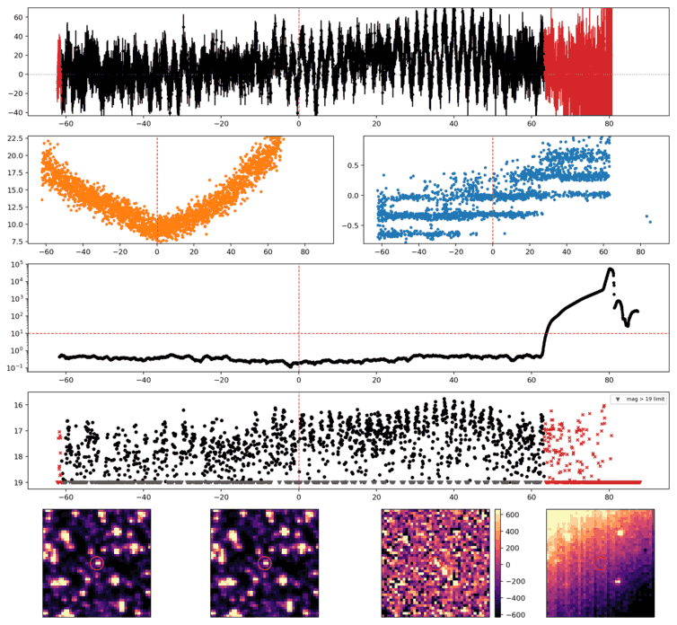
Search centered on refined position (246.0275624, -61.3098535 deg). Gaia coordinates are at J2016.0; proper motions are shown, without epoch propagation. A positional match does not change the candidate flags.
| Source ID / catalog entry | Separation (arcsec) | RA (deg) | Dec (deg) | G (mag) | BP (mag) | RP (mag) | Parallax ± error (mas) | PM RA* ± error (mas/yr) | PM Dec ± error (mas/yr) | RUWE | Variability |
|---|---|---|---|---|---|---|---|---|---|---|---|
| 5831066305118857472 | 2.250 | 246.0271288 | -61.3104429 | 11.630 | 11.857 | 11.250 | 1.151 ± 0.019 | -6.031 ± 0.022 | -8.288 ± 0.019 | 1.012 | NOT_AVAILABLE |
| 5831066305088009984 | 4.720 | 246.0302456 | -61.3100976 | 20.708 | 20.213 | 19.291 | — | — | — | — | NOT_AVAILABLE |
Retrieved 2026-10-19T09:28:18.972372+00:00
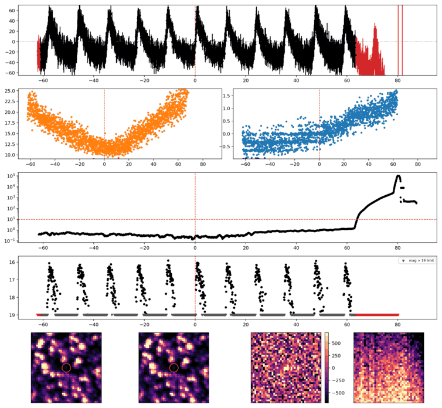
Search centered on refined position (265.9847853, -48.8927209 deg). Gaia coordinates are at J2016.0; proper motions are shown, without epoch propagation. A positional match does not change the candidate flags.
| Source ID / catalog entry | Separation (arcsec) | RA (deg) | Dec (deg) | G (mag) | BP (mag) | RP (mag) | Parallax ± error (mas) | PM RA* ± error (mas/yr) | PM Dec ± error (mas/yr) | RUWE | Variability |
|---|---|---|---|---|---|---|---|---|---|---|---|
| 5948188134807888128 | 3.536 | 265.9853088 | -48.8936409 | 19.008 | 20.289 | 17.934 | 1.052 ± 0.288 | 2.299 ± 0.343 | -0.355 ± 0.204 | 1.002 | NOT_AVAILABLE |
| 5948188139104878464 | 3.667 | 265.9835244 | -48.8921289 | 19.781 | 20.421 | 18.972 | 0.691 ± 0.477 | -1.587 ± 0.517 | -2.429 ± 0.341 | 0.925 | NOT_AVAILABLE |
| 5948188139104879104 | 4.340 | 265.9842107 | -48.8915760 | 20.542 | 20.999 | 19.582 | 0.005 ± 0.941 | -3.516 ± 1.216 | -1.453 ± 0.769 | 0.959 | NOT_AVAILABLE |
Retrieved 2026-10-19T09:28:20.196765+00:00
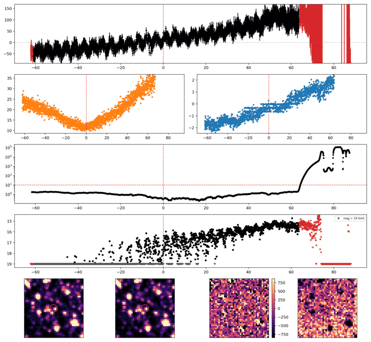
Search centered on refined position (253.4294987, -53.2810425 deg). Gaia coordinates are at J2016.0; proper motions are shown, without epoch propagation. A positional match does not change the candidate flags.
| Source ID / catalog entry | Separation (arcsec) | RA (deg) | Dec (deg) | G (mag) | BP (mag) | RP (mag) | Parallax ± error (mas) | PM RA* ± error (mas/yr) | PM Dec ± error (mas/yr) | RUWE | Variability |
|---|---|---|---|---|---|---|---|---|---|---|---|
| 5936035889912952320 | 0.112 | 253.4294482 | -53.2810495 | 18.765 | 19.188 | 17.963 | 0.433 ± 0.194 | -5.217 ± 0.198 | -3.535 ± 0.157 | 1.026 | NOT_AVAILABLE |
| 5936035889912952192 | 1.032 | 253.4290428 | -53.2809538 | 20.768 | — | — | — | — | — | — | NOT_AVAILABLE |
| 5936035889915415296 | 3.544 | 253.4281579 | -53.2816141 | 20.657 | 21.635 | 19.617 | 2.214 ± 1.582 | 0.677 ± 1.856 | -1.933 ± 1.247 | 1.476 | NOT_AVAILABLE |
| 5936035889912946304 | 3.727 | 253.4306417 | -53.2818203 | 20.194 | 20.684 | 19.311 | 0.422 ± 0.552 | -4.616 ± 0.598 | -5.210 ± 0.479 | 0.983 | NOT_AVAILABLE |
| 5936035885625265536 | 4.236 | 253.4276284 | -53.2806766 | 21.001 | — | — | — | — | — | — | NOT_AVAILABLE |
Retrieved 2026-10-19T09:28:21.252631+00:00
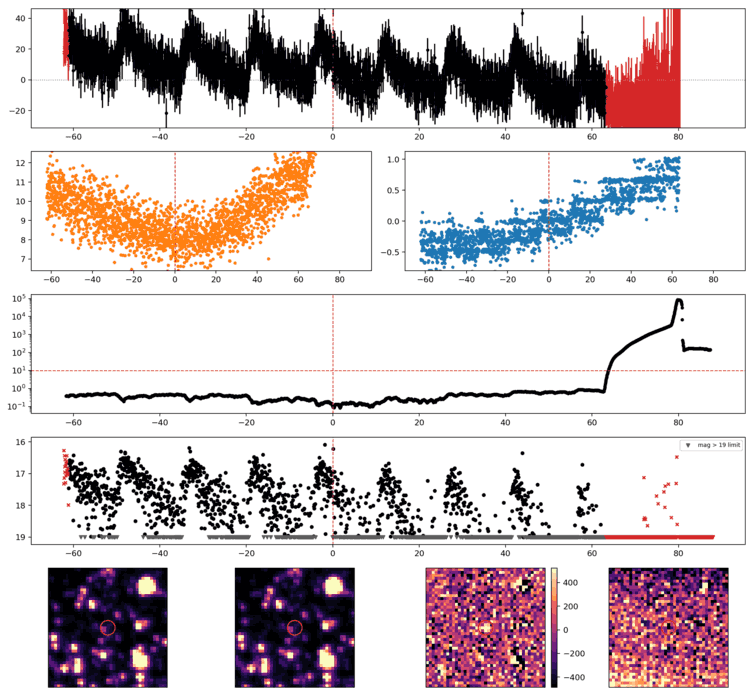
Search centered on refined position (271.9416473, -54.6322317 deg). Gaia coordinates are at J2016.0; proper motions are shown, without epoch propagation. A positional match does not change the candidate flags.
No Gaia DR3 sources found within 5 arcseconds.
Retrieved 2026-10-19T09:28:22.204783+00:00
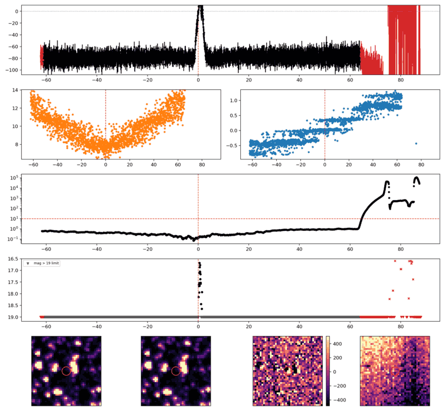
Search centered on refined position (225.4839020, -40.8421543 deg). Gaia coordinates are at J2016.0; proper motions are shown, without epoch propagation. A positional match does not change the candidate flags.
No Gaia DR3 sources found within 5 arcseconds.
Retrieved 2026-10-19T09:28:23.474110+00:00
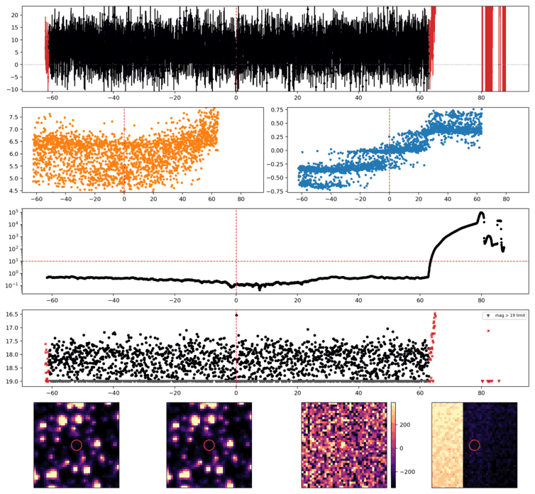
Search centered on refined position (292.5283072, -64.4319245 deg). Gaia coordinates are at J2016.0; proper motions are shown, without epoch propagation. A positional match does not change the candidate flags.
No Gaia DR3 sources found within 5 arcseconds.
Retrieved 2026-10-19T09:28:24.407018+00:00
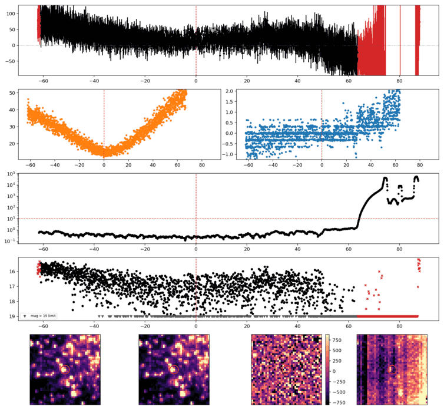
Search centered on refined position (246.8562694, -50.0055907 deg). Gaia coordinates are at J2016.0; proper motions are shown, without epoch propagation. A positional match does not change the candidate flags.
| Source ID / catalog entry | Separation (arcsec) | RA (deg) | Dec (deg) | G (mag) | BP (mag) | RP (mag) | Parallax ± error (mas) | PM RA* ± error (mas/yr) | PM Dec ± error (mas/yr) | RUWE | Variability |
|---|---|---|---|---|---|---|---|---|---|---|---|
| 5934610441826912768 | 1.733 | 246.8555388 | -50.0054848 | 18.168 | 18.922 | 16.863 | 0.307 ± 0.154 | -2.707 ± 0.226 | -4.169 ± 0.145 | 1.055 | NOT_AVAILABLE |
| 5934610441836098176 | 3.331 | 246.8558169 | -50.0064690 | 19.959 | — | — | -1.209 ± 0.894 | -4.597 ± 1.053 | -4.708 ± 0.890 | 1.070 | NOT_AVAILABLE |
| 5934610437511127808 | 3.522 | 246.8572229 | -50.0063533 | 11.576 | 13.086 | 10.387 | 0.620 ± 0.026 | -4.928 ± 0.032 | -7.119 ± 0.023 | 0.960 | NOT_AVAILABLE |
| 5934610441835267328 | 4.227 | 246.8544796 | -50.0053551 | 17.411 | 18.426 | 16.355 | 0.090 ± 0.105 | -5.734 ± 0.155 | -4.170 ± 0.100 | 1.044 | NOT_AVAILABLE |
Retrieved 2026-10-19T09:28:25.388661+00:00
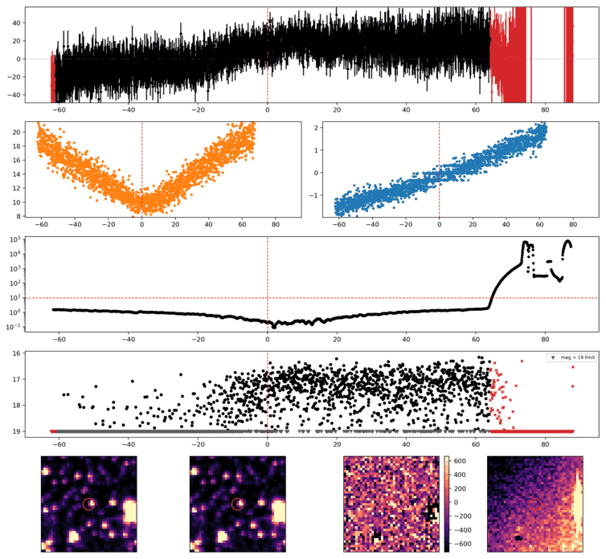
Search centered on refined position (243.7037212, -32.9768361 deg). Gaia coordinates are at J2016.0; proper motions are shown, without epoch propagation. A positional match does not change the candidate flags.
| Source ID / catalog entry | Separation (arcsec) | RA (deg) | Dec (deg) | G (mag) | BP (mag) | RP (mag) | Parallax ± error (mas) | PM RA* ± error (mas/yr) | PM Dec ± error (mas/yr) | RUWE | Variability |
|---|---|---|---|---|---|---|---|---|---|---|---|
| 6035601031508967680 | 2.290 | 243.7042901 | -32.9764156 | 17.436 | 18.368 | 16.483 | 0.886 ± 0.113 | 3.967 ± 0.137 | 3.517 ± 0.100 | 1.223 | VARIABLE |
| 6035601031508965632 | 2.930 | 243.7036154 | -32.9776451 | 17.153 | 17.824 | 16.389 | 0.856 ± 0.080 | -3.169 ± 0.098 | 0.631 ± 0.074 | 0.975 | NOT_AVAILABLE |
| 6035601031501453184 | 3.725 | 243.7043419 | -32.9777303 | 20.530 | 21.257 | 19.689 | 0.230 ± 1.159 | 0.737 ± 2.235 | 0.201 ± 1.862 | 1.022 | NOT_AVAILABLE |
Retrieved 2026-10-19T09:28:26.501300+00:00
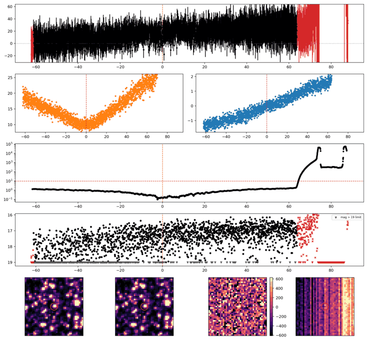
Search centered on refined position (242.3724822, -40.6840155 deg). Gaia coordinates are at J2016.0; proper motions are shown, without epoch propagation. A positional match does not change the candidate flags.
| Source ID / catalog entry | Separation (arcsec) | RA (deg) | Dec (deg) | G (mag) | BP (mag) | RP (mag) | Parallax ± error (mas) | PM RA* ± error (mas/yr) | PM Dec ± error (mas/yr) | RUWE | Variability |
|---|---|---|---|---|---|---|---|---|---|---|---|
| 5996703161963655296 | 3.354 | 242.3728991 | -40.6848920 | 20.689 | 20.011 | 19.181 | 0.748 ± 1.681 | -5.377 ± 2.199 | -4.064 ± 1.336 | 1.143 | NOT_AVAILABLE |
| 5996703161963658496 | 3.876 | 242.3714955 | -40.6832414 | 20.902 | 21.829 | 20.081 | — | — | — | — | NOT_AVAILABLE |
Retrieved 2026-10-19T09:28:27.329895+00:00
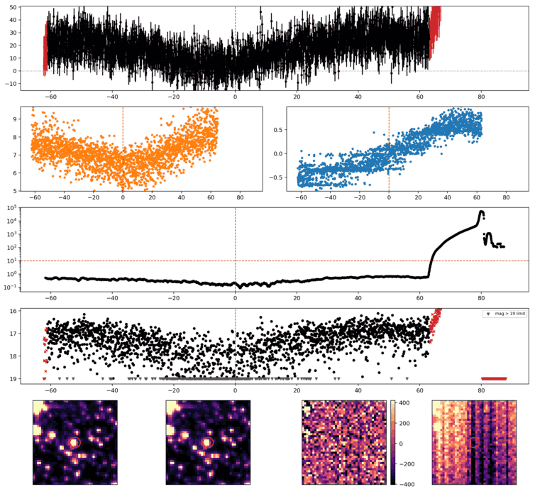
Search centered on refined position (281.4600467, -60.0336475 deg). Gaia coordinates are at J2016.0; proper motions are shown, without epoch propagation. A positional match does not change the candidate flags.
No Gaia DR3 sources found within 5 arcseconds.
Retrieved 2026-10-19T09:28:28.146188+00:00
Representative chosen by category, detection count, then Gaussian S/N. Original measurements and classifications are retained below.
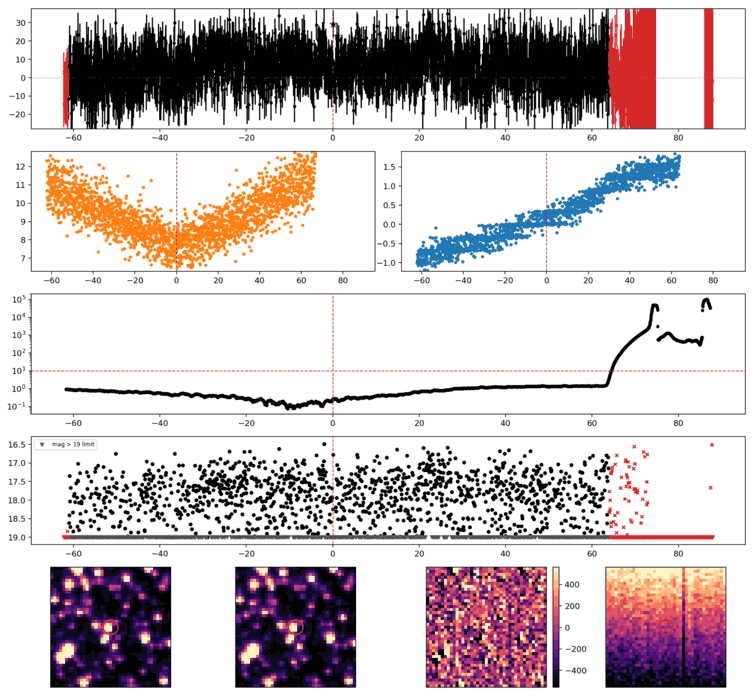
Search centered on refined position (230.1669898, -37.9938073 deg). Gaia coordinates are at J2016.0; proper motions are shown, without epoch propagation. A positional match does not change the candidate flags.
No Gaia DR3 sources found within 5 arcseconds.
Retrieved 2026-10-19T09:28:28.963048+00:00
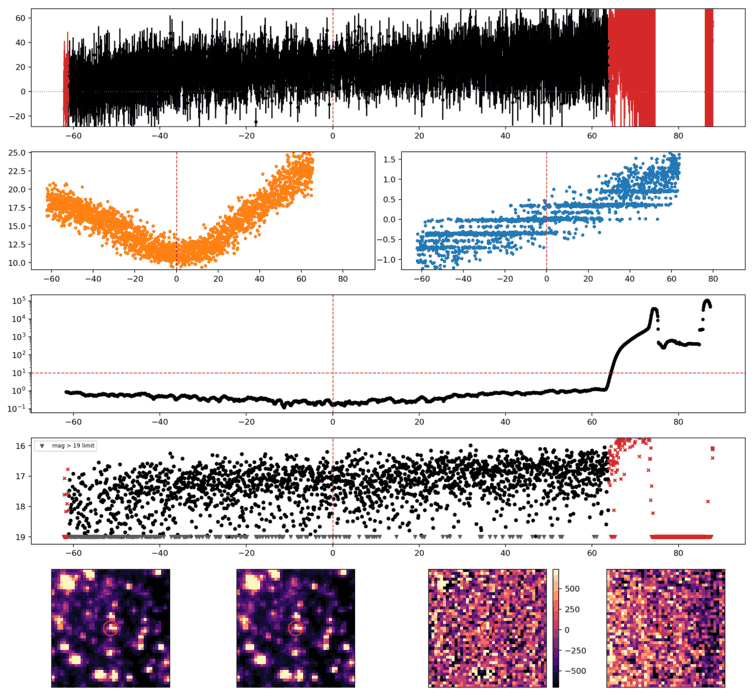
Search centered on refined position (255.6311386, -47.1888228 deg). Gaia coordinates are at J2016.0; proper motions are shown, without epoch propagation. A positional match does not change the candidate flags.
| Source ID / catalog entry | Separation (arcsec) | RA (deg) | Dec (deg) | G (mag) | BP (mag) | RP (mag) | Parallax ± error (mas) | PM RA* ± error (mas/yr) | PM Dec ± error (mas/yr) | RUWE | Variability |
|---|---|---|---|---|---|---|---|---|---|---|---|
| 5963052368080086144 | 3.197 | 255.6324418 | -47.1888864 | 16.169 | 17.597 | 14.997 | 0.249 ± 0.048 | -0.109 ± 0.057 | 0.310 ± 0.048 | 0.980 | NOT_AVAILABLE |
Retrieved 2026-10-19T09:28:29.754396+00:00
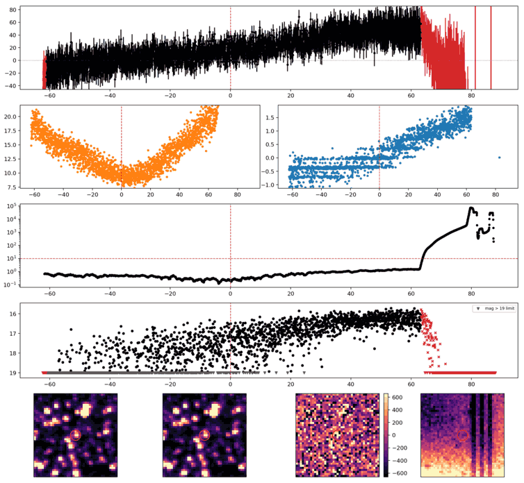
Search centered on refined position (256.8418375, -53.9355967 deg). Gaia coordinates are at J2016.0; proper motions are shown, without epoch propagation. A positional match does not change the candidate flags.
| Source ID / catalog entry | Separation (arcsec) | RA (deg) | Dec (deg) | G (mag) | BP (mag) | RP (mag) | Parallax ± error (mas) | PM RA* ± error (mas/yr) | PM Dec ± error (mas/yr) | RUWE | Variability |
|---|---|---|---|---|---|---|---|---|---|---|---|
| 5923794167964840832 | 4.884 | 256.8396492 | -53.9360220 | 20.027 | 19.987 | 18.874 | 0.940 ± 0.645 | -1.653 ± 0.641 | -4.591 ± 0.617 | 1.004 | NOT_AVAILABLE |
Retrieved 2026-10-19T09:28:30.547539+00:00